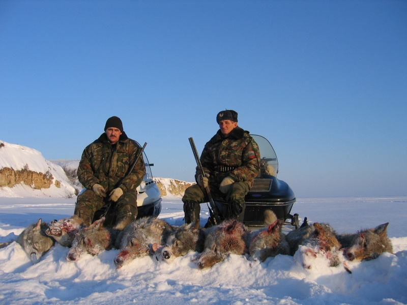

The growing human population and urbanization cause habitat loss and fragmentation, thus affecting their ability to find sufficient food and disrupting pack territories. This forces wolves sometimes to kill livestock, causing concern for herders. As a result, to prevent losing livestock, herders often kill a large part of the wolf population.
Besides, many people hunt wolves for other reasons, such as for their fur or sheer sport and profit.

By www.volganet.ru, CC BY-SA 3.0, https://commons.wikimedia.org/w/index.php?curid=24697634
Fortunately, the decline of the wild wolf population has been slowed down since the 1970s. In 2003, the estimated global population of wild wolves was 300,000.
The IUCN classifies the wolf as Least Concern on its Red List due to its relatively widespread range and stable population. The species is listed under Appendix II of the Convention on International Trade in Endangered Species of Wild Fauna and Flora (CITES), which means that international trade in the species (including parts and derivatives) is regulated.